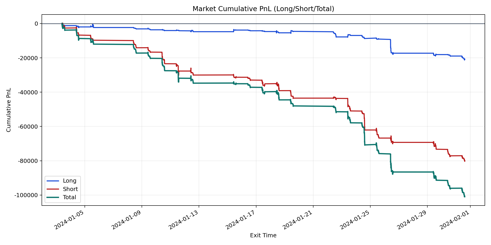
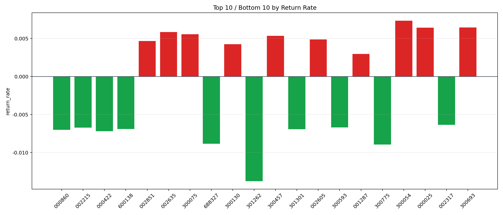

| repo_root | /home/haoranyou/data/output/alpha0.4_1w_5s_3ticks_index_filter/index_weights_1000 |
|---|---|
| period_months | 1 |
| period_label | 2024-01-03_to_2024-01-31 |
| start_time | 2024-01-03 09:51:02 |
| end_time | 2024-01-31 14:42:02 |
| n_trades | 8126 |
| n_symbols | 347 |
| total_pnl | -100998.36390000001 |
| long_total_pnl | -20698.570150000043 |
| short_total_pnl | -80299.79374999998 |
| total_entry_notional | 75615021.0 |
| long_entry_notional | 16927781.0 |
| short_entry_notional | 58687240.0 |
| total_return_rate | -0.0013356918052036249 |
| long_return_rate | -0.0012227574393832272 |
| short_return_rate | -0.0013682666581355672 |
| top_symbols_by_return | ["300054", "300693", "000025", "002635", "300075", "300457", "002605", "002851", "300130", "001287"] |
| bottom_symbols_by_return | ["301262", "300775", "688327", "000422", "000860", "301301", "600138", "002215", "300593", "002317"] |

